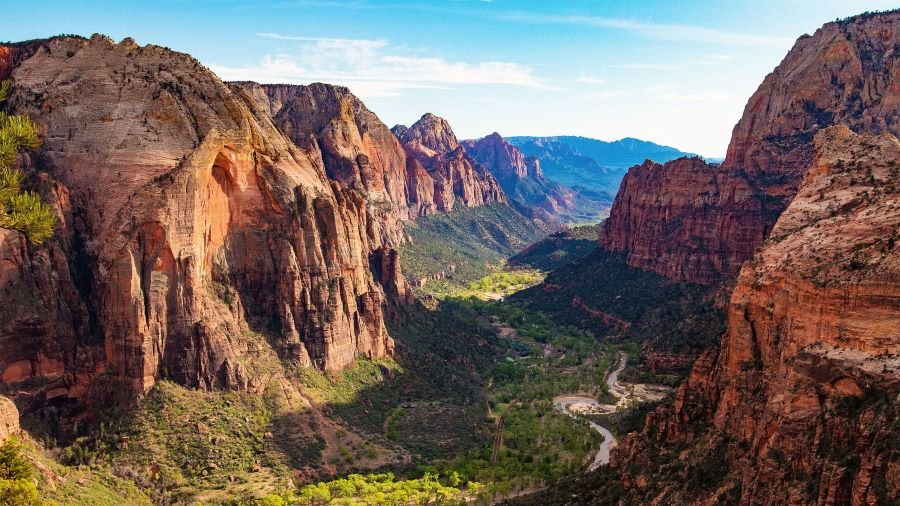
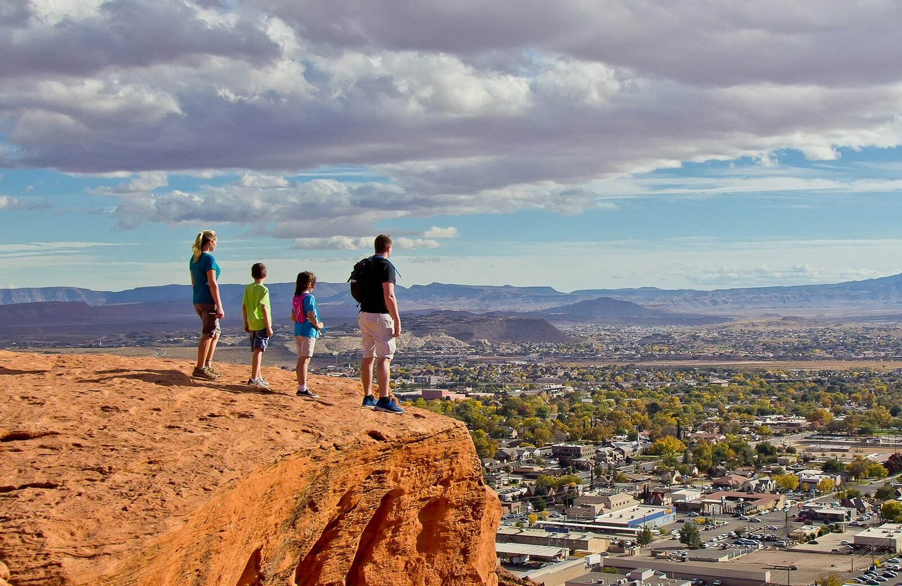
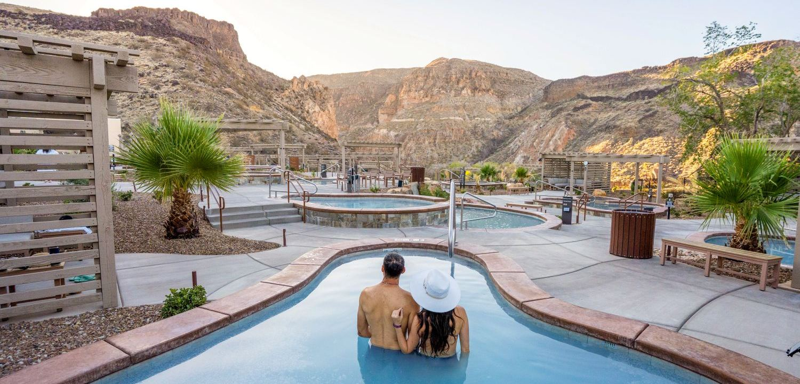
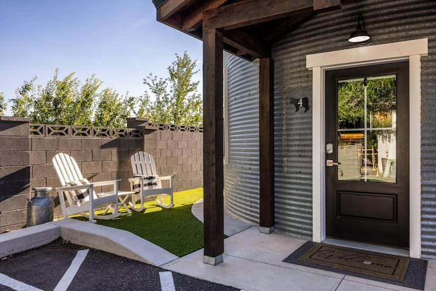

The great outdoors
Zion National Park
Make a day for the canyon. Explore the park's official guide for trails, access, seasonal conditions, and planning your visit.
Plan your visitOur corner of Southern Utah
A few favourite places to begin your own adventure.

The great outdoors
Make a day for the canyon. Explore the park's official guide for trails, access, seasonal conditions, and planning your visit.
Plan your visit
A different kind of blue
Red sandstone and open water offer another way to spend a Southern Utah day. Check the state park's current access and visitor information before you go.
Explore Sand Hollow
Room to wander
Discover another side of Zion. Check the National Park Service for current road conditions and ideas for your visit.
Discover Kolob Canyons
Gather around the table